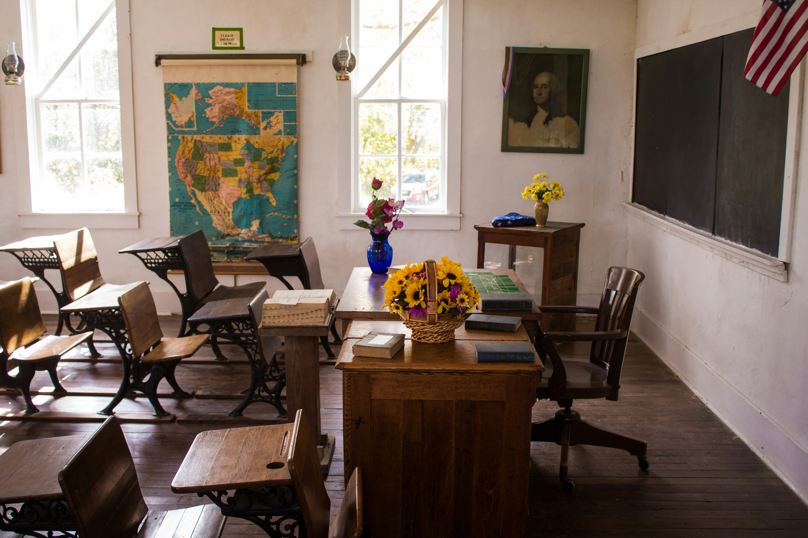

Congratulations! You chose to follow your heart and move to San Diego. Your days are spent on the beach and you have never been happier. Now, you need to choose a career. Will you follow your heart again and become a teacher, or listen to your family and become a nurse?
